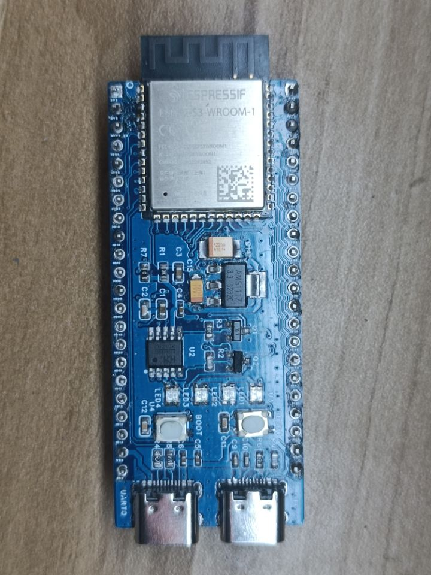
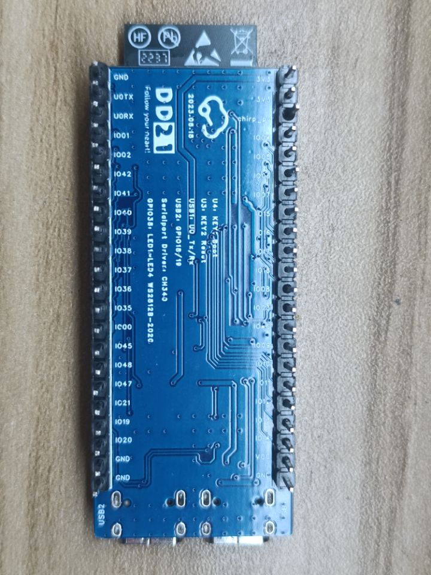
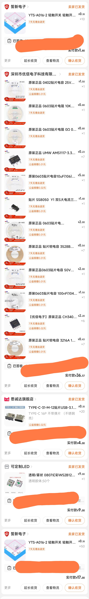

Abstract
learning so much mcu with development Board of official. this time i want to learn how to design a
develemopment board. This need EDA software like AD. But LCEDA is very sample to use.
Referance
设计完成




设计要点(some considerrations)
- 电源(模组)
- 上电时序与复位(模组)
- Flash 及 SRAM
- 晶振
- 射频
- UART
- ADC
- USB(模组)
- 触摸传感器
- Strapping 管脚(模组)
0.EDA
立创EDA
不得不说立创EDA对我这个第一次画pcb的人来说真好用，总结以下要点。
- 先设置规则， 设置规则避免不了线宽，过孔设置，但是芯片datasheet中的参数好像都比较严苛，但是我想要白嫖嘉立创的免费打样，就得 根据厂商的工艺参数来 .
- GND和电源网络先隐藏最后布
- GND最好走线连接，我想当然，最后铺铜就可以了，结果有很多游离铜块。
- 信号线尽量避开电源线
- 个人理解双层板顶层根据芯片走线方向控制一致， 我的板子应该是顶层水平和芯片那里的走线保持一致。 两层之间的走线最好垂直，最好不要有平行线尤其是电源线。
- 放置缝合孔，尽量连接尽可能多的GND， 保证信号的完整性。
- 推荐在信号两侧布置过孔提高抗干扰能力。
- 使用禁用区域，禁用铺铜，避免游离铜块
- 丝印层字体最小线宽5mil，高度40mil，在小就看不清楚了。
1.电源（power）
参考立创开源项目上的电源方案， 使用ASM的3.3VLDO（0.23RMB），该方案根据手册推荐， 使用了两颗钽电容。（0.5+0.4RMB）， 焊接的时候上电冒烟了我才想起来查一下，钽电容的方向，想当然了，以为电容都没方向。
2. USB使用type-c
看了别人推荐的micro-usb，还是上了type-c，烙铁焊接的时候还是有点难度，引脚容易粘连，不过我用吸锡带拖了一遍粘连，效果非常不错。图便宜买的便宜的母座，发现很涩。
复位按钮
白按钮，淘宝有货，但是运费太贵了，2毛一个按钮，快递费8块，没办法还是多买点吧，买了60个，下次画板子一定先去看元器件。
串口芯片
CH340K（2.2RMB），电烙铁焊接的时候有点难度，因为芯片底面有个GND，烙铁放不下去，不过办法总比困难多， 先给焊盘上锡，然后焊锡融化快速将芯片推到位，一定要快，要不然芯片会歪在pcb上，其他引脚无法对齐。
LED
和esp s3的开发板一致，都是WS2812，该芯片的优点是只占用了一个gpio，可以实现RGB的控制，但是成本也比较贵。参考了别人的设计对比芯片手册给出的设计，参考开源设计上用的是3.3 v供电，可是手册上的是5v，于是我选用了5v，上电测试后发现太亮了，爆闪，大意了。看看后续用pwm调一下。引脚还设计错了设置成IO38了，开发板是IO48。
注入灵魂（烧录程序）
第一次上电发现板子一直重启，不知道怎么回事，以为电源芯片不行，供电不足，后更换可调电源输出3.3v还是一样，于是排查复位电路，全部拆除依旧重启，后连接串口助手波特率9600强行连接（OTG的串口，自带的那个不是走ch340的那个），发现一些报错， 后去搜索，发现bilibili的一个帖子，说到Strapping引脚，将IO0，和IO46进行拉低，即可解决问题，当时我才反应过来，会不会是因为flash里面没有内容，程序错误，所以导致的这个报错，IO0拉低不就是板子上的boot按钮嘛，于是恍然明白，进boot然后烧录程序即可。
进到example
idf.py settarge esp32s3
idf.py build
idf.py -p COMx元器件购买
